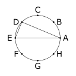

À faire en classe
Ces exercices sont faits pour travailler en classe. Ils servent à approfondir les notions de la section et à atteindre les objectifs d’apprentissage plus avancés.
1.
On a placé 16 cubes de couleur rouge, vert, bleu et orange en quatre colonnes tel qu’illustré ci-dessous. De combien de façons peut-on ramasser ces cubes, si on doit toujours ramasser un cube se trouvant au-dessus d’une colonne.

Indice.
Utiliser les lettres \(R, V, B\) et \(O\) pour représenter, respectivement, les cubes de couleur rouge, vert, bleu et orange. Utiliser ces lettres pour compter le nombre de façons de ramasser les cubes.
Réponse.
\(\frac{16!}{6!4!2!4!}\)
2.
On considère l’ensemble \(A=\{0,1,2,3,\dots, 9\}\text{.}\) Combien de \(3-\)permutations de \(A\) sont telles que les nombres sont en ordre croissant. Par exemple, \(126\) et \(079\) sont en ordre croissant, mais \(405\) ne l’est pas.
Réponse.
\(\Binomial{10}{3}=\frac{10!}{7!3!}\text{.}\)
Solution.
Ici, on utilisera le principe du produit afin de résoudre le problème. On montrera ainsi qu’il exsite \(\Binomial{10}{3}\) \(3-\)permutations de \(A\) qui sont en orde croissant. Avant de montrer la démarche, on fait quelsques remarques, puisque la réponse à ce problème est parfois contre-inbtuitive. En effet, dans la question, on cherche le nombre de \(3-\)permutations de \(A\) avec un ordre particulier. Il est donc tentant d’utiliser l’expression \(\Permutation{10}{3} \text{.}\) Cependant, comme on veut uniquement les \(3\)-permutations de \(A\) qui ont un ordre particulier. On verra que ceci revient à choisir les objets sans considérer l’ordre.
On fait maintenant la démarche. On sépare la tâche en deux étapes. Tout d’abord, on choisit trois objets parmi les dix éléments de \(A\text{,}\) et ensuite on les mets en ordre croissant. On sait qu’il y a \(\Binomial{10}{3}\) façons de choisir trois objets parmi dix. Par la suite, si on a trois éléments \(A\text{,}\) il y a une seule façon de choisir l’ordre, car on doit nécessairement les mettre en ordre croissant! Par le principe du produit, il y a donc \(\Binomial{10}{3}\cdot 1 =\frac{10!}{3!7!}\) façons d’accomplir cette tâche.
3.
On veut assoir huit personnes autour d’une table circulaire.
(a)
De combien de façons peut-on accomplir cette tâche si deux compositions sont équivalentes lorsque tout le monde a les mêmes voisins à gauche et à droite?
Réponse.
\(\frac{8!}{8}=7!\text{.}\)
Solution.
(b)
De combien de façons peut-on accomplir cette tâche si deux compositions sont équivalentes lorsque tout le monde a les mêmes voisins, peu importe qu’ils soient à gauche ou à droite?
Réponse.
\(\frac{8!}{8\cdot 2}=\frac{7!}{2}\text{.}\)
Solution.
4.
On veut assoir \(15\) personnes autour de deux tables circulaires. On peut assoir \(10\) personnes à la première table, et les cinq autres à la seconde table. De combien de façons peut-on accomplir cette tâche si deux compositions sont équivalentes lorsque tout le monde a les mêmes voisins à gauche et à droite?
Indice.
Commencer par choisir les personnes qui seront à la première table, et ensuite placer tout le monde sur les tables.
Réponse.
\(\Binomial{15}{10}\cdot \frac{10!}{10} \cdot \frac{5!}{5}=\Binomial{15}{10}\cdot {9!} \cdot {4!}\)
5.
(a)
Combien de mots différents peut-on former à partir des lettres du mot \(DATAGRAMME\text{?}\)
Réponse.
\(\frac{10!}{3!2!}\)
(b)
Parmi les mots formés à la première partie, combien d’entres eux ont tous les \(A\) ensembles?
Réponse.
\(\frac{8!}{2!}\)
(c)
Parmi les mots formés à la première partie, combien d’entres eux ont tous les \(M\) ensembles?
Réponse.
\(\frac{9!}{3!}\)
(d)
Parmi les mots formés à la première partie, combien d’entres eux ont tous les \(A\) ensembles et tous les \(M\) ensembles?
Réponse.
\({7!}\)
(e)
Parmi les mots formés à la première partie, combien d’entres eux ont tous les \(A\) ensembles ou tous les \(M\) ensembles?
Réponse.
\(\frac{8!}{2!}+\frac{9!}{3!}-7!\)
6.
De combien de façons peut-on placer \(24\) livres différents sur quatre étagères?
Indice.
Représenter un placement à l’aide des nombres \(1\) à \(24\) pour les livres et des barres pour séparer les étagères. Par exemple \(4,2,5| 7,3 | 6, 1| 8, \dots, 24\) représente le placement avec les livres \(4\text{,}\) \(2\) et \(5\) sur la première étagère, les livres \(7\) et \(3\) sur la deuxième étagère, les livres \(6\) et \(1\) sur la troisième étagère et les livres \(8\) à \(24\) sur la dernière.
Réponse.
\(\frac{27!}{3!}\)
7.
Un palindrome est un mot qui est le même si on le lit à l’endroit que si on le lit à l’envers. Par exemple, \(abcba\) est un palindrome.
(a)
Combien de palindromes de cinq lettres peut-on former avec les \(26\) lettres de l’alphabet ?
Indice.
Il suffit de choisir les trois premières lettres.
Réponse.
\(26^3\text{.}\)
(b)
Combien de palindromes de six lettres peut-on former avec les \(26\) lettres de l’alphabet ?
Indice.
Il suffit de choisir les trois premières lettres.
Réponse.
\(26^3\text{.}\)
(c)
Combien de palindromes de \(n\) lettres peut-on former avec les \(26\) lettres de l’alphabet ?
Indice.
La réponse dépend de la parité de \(n\text{.}\)
Réponse.
Si \(n\) est pair, on pose \(m=\frac{n}{2}\text{.}\) Si \(n\) est impair, on pose \(m=\frac{n+1}{2}\text{.}\) La réponse est alors \(26^m\text{.}\)
(d)
Combien de palindromes de cinq lettres peut-on former avec les \(26\) lettres de l’alphabet si chaque lettre ne peut pas être utilisée plus de deux fois?
Réponse.
\(P_{3}^{26}=\frac{26!}{23!}=26\cdot 25 \cdot 24\text{.}\)
8.
On place huit points, notés de \(A\) à \(H\) sur un cercle à égale distance. Combien de triangles peut-on former à partir de ces points, tel qu’illustré sur la figure ci-dessous?

Réponse.
\(\Binomial{8}{3}=\frac{8!}{3!5!}\)
Solution.
Il suffit de choisir trois points parmi les huit points pour former chaque triangle.
9.
De combien de façons peut-on placer quatre billes noires (indiscernables) dans cinq urnes différentes?
Réponse.
\(\Binomial{8}{4}=\frac{8!}{4!4!}\)
Solution.
Il faut compter le nombre de solutions à l’équation
\begin{equation*}
x_1 + x_2 + x_3 + x_4 + x_5 = 4
\end{equation*}
où \(x_i\in\ \N\text{.}\)
10.
Déterminer le coefficient du terme \(x^9y^3\) dans le développement de:
(a)
\((x+y)^{12}\)
Réponse.
\(\Binomial{12}{9}=\frac{12!}{9!3!}\)
(b)
\((x+2y)^{12}\)
Réponse.
\(2^3\cdot \Binomial{12}{9}=2^3\cdot \frac{12!}{9!3!}\)
(c)
\((2x+y)^{12}\)
Réponse.
\(2^9\cdot \Binomial{12}{9}=2^9\cdot \frac{12!}{9!3!}\)
11.
Un joueur de poker pige cinq cartes d’un paquet de \(52\) cartes standard. Combien de mains différentes peut-il obtenir:
(a)
telles que les cinq cartes sont de la même sorte?
Réponse.
\(\Binomial{4}{1}\Binomial{13}{1}=\frac{4!}{1!3!}\frac{13!}{1!12!}=4\cdots 13\)
(b)
qui contiennent quatre as?
Réponse.
\(48\)
(c)
qui contiennent quatre cartes de la même valeur?
Réponse.
\(13\cdot 48\)
(d)
qui contiennent trois as et deux valets?
Réponse.
\(\Binomial{4}{3}\cdot \Binomial{4}{2}=4\cdot 6 = 24\)
(e)
qui contiennent trois as et une paire?
Réponse.
\(\Binomial{4}{3}\cdot \Binomial{4}{2}\cdot 12 =288\)
(f)
qui contiennent deux paires (et une carte d’une troisième valeur)?
Réponse.
\(\Binomial{13}{2}\cdot \Binomial{4}{2}\cdot \Binomial{4}{2} \cdot 44=\frac{13!}{2!11!}\cdot \frac{4!}{2!2!}\cdot \frac{4!}{2!2!} \cdot 44\)
12.
Déterminer le nombre de solutions entières à l’équation
\begin{equation*}
x_1+x_2+x_3+x_4 = 32
\end{equation*}
où
(a)
\(x_i\geq 0\) pour \(1\leq i \leq 4\text{.}\)
Réponse.
\(\Binomial{35}{3}=\frac{35!}{32!3!}\)
(b)
\(x_i \gt 0\) pour \(1\leq i \leq 4\text{.}\)
Réponse.
\(\Binomial{31}{3}=\frac{31!}{28!3!}\)
(c)
\(x_1, x_2\geq 5\) et \(x_3, x_4\geq 7\text{.}\)
Réponse.
\(\Binomial{11}{3}=\frac{11!}{9!3!}\)
13.
Déterminer le nombre de solutions entières à l’équation
\begin{equation*}
x_1+x_2+x_3+x_4+x_5 \leq 40
\end{equation*}
où
(a)
\(x_i\geq 0\) pour \(1\leq i \leq 5\text{.}\)
Réponse.
\(\Binomial{45}{5}=\frac{45!}{40!5!}\)
(b)
\(x_i\geq -3\) pour \(1\leq i \leq 5\text{.}\)
Réponse.
\(\Binomial{60}{5}=\frac{60!}{55!5!}\)
14.
Combien de solutions entières positives y a-t-il pour la paire d’équations
\begin{align*}
x_1+x_2+x_3+\cdots +x_{7}\amp = 37\\
x_1+x_2+x_3\amp = 6
\end{align*}
Réponse.
\(\Binomial{8}{2}\cdot \Binomial{34}{3}=\frac{8!}{6!2!}\cdot \frac{34!}{31!3!}\)